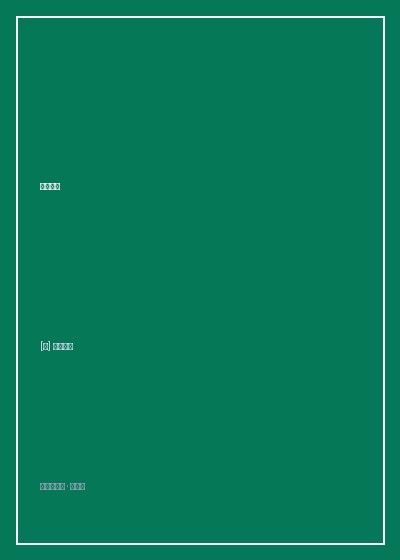

《长日将尽》

总体观点
《长日将尽》（The Remains of the Day）是诺贝尔文学奖得主石黑一雄最具艺术圆熟度与文学感染力的传世杰作。小说主人公史蒂文斯（Stevens）是达林顿府（Darlington Hall）服务了三十余年的首席大管家。二战后大英帝国荣光散尽，达林顿勋爵因战前亲纳粹绥靖丑闻郁郁而终，古老庄园被美国新贵法拉戴先生买下。在新主人的资助与鼓励下，史蒂文斯借着招募旧女管家肯顿小姐重回府邸的由头，驾驶着福特轿车展开了一场为期六天的英格兰西南部乡村公路之旅。
小说的叙事魔力在于石黑一雄标志性的“不可靠叙述者（Unreliable Narrator）”。在整整六天的行车日记中，史蒂文斯以极度讲究、繁复、老派绅士礼数十足的语言，不断论证何为英国管家的“伟大尊严”——即无论发生何种私人剧变，必须时刻保持身心与职业角色的绝对合一，不泄露一丝个人情感裂痕。然而随着层层回忆剥开，读者惊骇地看清了尊严面具背后的残酷真相：为了侍奉勋爵的高规格国际秘密外交会议，他在父亲中风濒死的床榻前强忍泪水坚守银器餐桌；为了恪守职业中立，他在勋爵轻信希特勒谎言沦为纳粹马前卒并开除犹太女佣时保持了绝对的盲从与沉默。
更为撕心裂肺的是他对肯顿小姐深藏三十年却始终死守边界的爱恋。当两人在康沃尔郡的小旅馆长椅上跨越二十年再次重逢，肯顿小姐坦陈当年曾因他的冷漠赌气出嫁、一生无数次幻想若当年与他结合会是何种光景时，史蒂文斯的内心刹那间如遭雷击，表面却依然给出了滴水不漏的体面祝福。在海滨码头黄昏华灯初上的长椅上，老管家终于在陌生的码头工人身旁痛哭失声。石黑一雄以此书深刻拷问了现代人的普遍困境：当我们把一生的全部精力毫无保留地献给一个宏大的外在幻象时，我们留给自己的真实生命究竟还剩下什么？
核心观点
-
1. 尊严的囚笼：将职业面具彻底焊接在肉身灵魂之上
所谓“伟大的尊严”往往以泯灭全部人性真实为代价。当个体视情感流露为耻辱、以毫无瑕疵的专业中立为傲时，他便亲手将自己封死在冰冷的棺椁中。
当父亲在庄园三楼房间溘然长逝时，正在一楼大厅穿梭为达林顿勋爵及其国际政要斟酒的史蒂文斯，面对客人的关切只回答“我只是眼眶有点发酸”。 -
2. 不可靠叙述的防御机制：用繁文缛节粉饰内心的巨大创痛
人们在面对不可挽回的人生亏欠与认知失调时，本能地会构筑一套滴水不漏的道德说辞与细节修辞，自欺欺人地回避直面真相的深渊。
史蒂文斯在长达数百页的篇幅中反复辩解自己只是去见肯顿小姐“解决达林顿府仆役人手短缺”，却在每一个日落时刻不自觉地摩挲肯顿小姐二十年前寄来的信笺。 -
3. 贵族政治神话的幻灭：盲从于权威所铸成的历史共谋罪孽
英国老派绅士自命为世界和平的操盘手，其自命不凡与业余外交最终沦为法西斯暴政的助推器。小人物对上流精英的无限崇拜，构成了平庸之恶的基石。
达林顿勋爵怀抱一战后对德国的同情，多次秘密召集里宾特洛甫等纳粹高官在庄园密谋，盲目充当张伯伦绥靖主义的掮客，直至二战爆发名誉扫地身败名裂。 -
4. 错位的未遂之爱：越是深爱越是用礼节的铁壁相互刺伤
世间最痛的遗憾不是遭逢背叛，而是两个彼此心意相通的灵魂，因为死守着荒谬的身份阶级与自尊戒律，眼睁睁看着真爱在冷漠推拉中化为飞灰。
肯顿小姐手捧热茶闯入史蒂文斯昏暗的私人书房，强行扳开他的手指看他在读什么书，发现竟是一本通俗爱情小说，那一刻空气几乎凝固，史蒂文斯却粗暴下达逐客令。 -
5. 黄昏是白昼中最美好的部分：在幻灭的余烬中学会安抚余生
即便一生所托非人、即便真爱早已擦肩而过，生命依然要向前跋涉。学会放下对完美过去的执念，在人生的残日微光中寻得内心的释然与从容。
在韦茅斯码头绚烂的彩灯下，一位素不相识的老水手告诉史蒂文斯“夕阳西下才是一天中最惬意的时候”，史蒂文斯决定回府后练习跟新主人开开美式玩笑。
全书思维导图 · 知识脉络树
全书结构
-
第一天 晚间：索尔兹伯里（达林顿府的变迁与出行动机）
老管家史蒂文斯在索尔兹伯里客栈记录达林顿府被美国富商买下的现状，反思管家职业的黄金时代，追溯肯顿小姐来信激起的内心涟漪。
史蒂文斯驾驶着老爷车行驶在萨默塞特蜿蜒的乡间小道上，赞叹英格兰风景的伟大之处在于“毫无喧嚣炫耀的极致内敛与从容”。 -
第二天 午前与下午：多塞特郡与父亲作为楷模的追忆
在莫蒂默池塘边远眺，回忆同样身为传奇管家的老父亲一生严苛恪守礼仪的轶事，以及达林顿勋爵战后初期涉足国际政治的理想主义情怀。
讲述父亲当年如何毫无表情地为侮辱过自己的印度总督贵族端上早餐托盘，将其奉为英国仆役尊严的无可争议巅峰。 -
第三天 午前：萨默塞特郡汤顿（1923年国际会议与丧父之夜）
详尽复盘达林顿府那场决定欧洲命运的非正式和平峰会，揭开史蒂文斯在父亲生命垂危之际依然坚守在主宴会厅倒酒服侍的惊心动魄细节。
杜邦先生等英法代表在楼下纵论凡尔赛条约时，肯顿小姐下楼含泪轻拍史蒂文斯的肩膀告知其父已逝，史蒂文斯迅速擦干眼角转身步入客厅。 -
第三天 晚间：莫斯科姆村（村民的质朴与对平民民主的反思）
因汽油耗尽被迫在偏远乡村借宿，受到朴素村民的英雄般款待，被误认为高级外交官，引发他对平民是否具备治国理政能力的保守主义思索。
村民哈利大叔高谈阔论“真正的英国尊严在于每个人都有投票权”，史蒂文斯内心反驳唯有达林顿勋爵这等贵族精英才有资格掌舵帝国航船。 -
第四天 下午：康沃尔郡利特尔顿村（与肯顿小姐二十年后的重逢）
全书情感高潮，史蒂文斯与改名为本恩太太的肯顿小姐在茶室相对而坐，肯顿小姐坦承对过去的悔恨与错过的爱情，史蒂文斯强作平静。
肯顿小姐双眼含泪直言“有无数次我想象离开丈夫跟你在一起”，史蒂文斯指尖深深抠入掌心，嘴上却温和规劝她回到丈夫与孙女身边享受天伦。 -
第六天 晚间：韦茅斯码头（长椅上的痛哭与长日将尽的释怀）
坐在海滨长椅上等待彩灯点亮，与退休老工人倾心交谈，终于崩溃承认自己把自己的人生全盘寄托在勋爵身上却落得满盘皆输，最终决定微笑着迎接残年。
海滨码头的一串串彩灯在夜幕中璀璨亮起，老人擦干泪水，心想回到庄园后应当好好摸索一下如何掌握美式幽默的技巧以取悦新雇主。